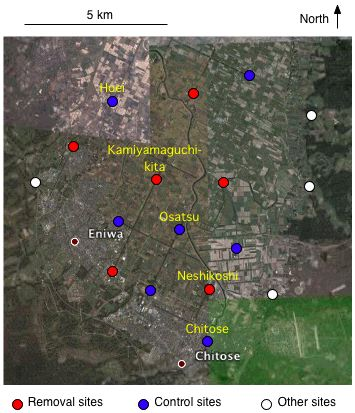
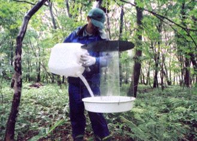
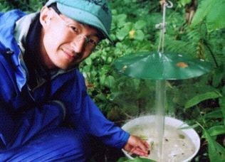
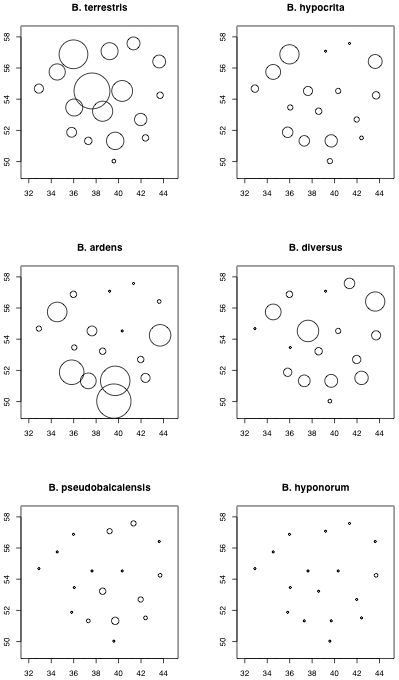
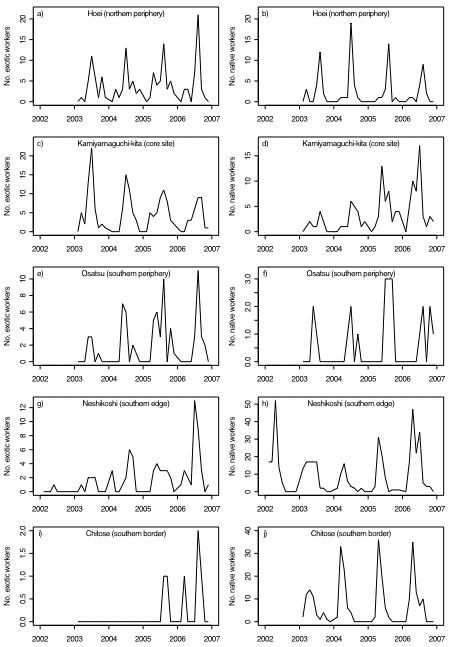
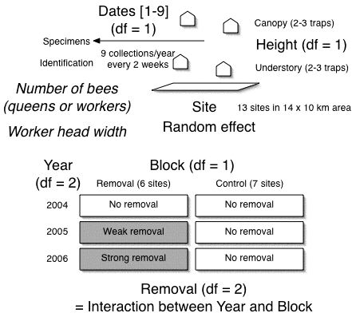
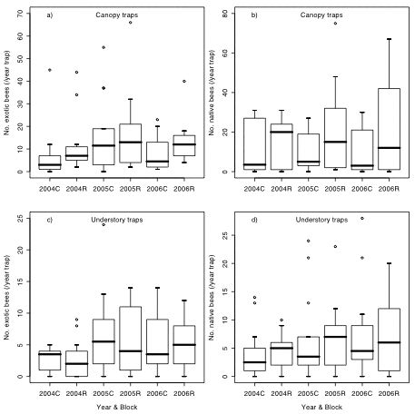
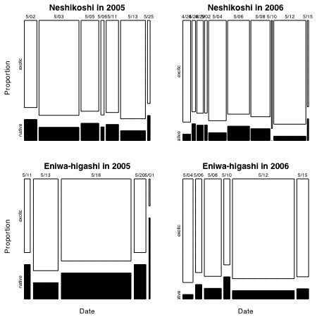
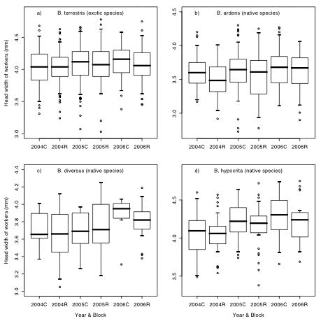
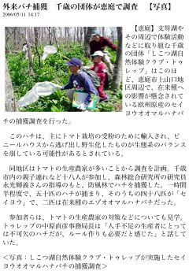

[Index]
外来マルハナバチに対する野外除去実験
(field removal experiment for exotic bumble bees)
実験の背景
環境省は、セイヨウオオマルハナバチを
外来生物法
の特定外来生物に指定すると2005年12月7日に発表しました。
それ以降、本種を使用する場合は、
飼養許可申請、逃亡防止策、使用後の巣箱の処分などが
義務づけられることになりました。
したがって、放出源が規制されているので、
すでに野外に定着した集団をどのように制御するかが議論されています。
さらに、2006年9月19日の報道によると、
北海道大雪山の黒岳山頂付近でセイヨウオオマルハナバチの女王が見つかりました。
本種は、気温の低い時期でも活動すること、
森林ではなく開けた景観を生息地として好むことなどから、
高山帯のお花畑に定着する恐れがありました。
低地の農業地帯ならともかく、国立公園内の高山帯ならば、
環境省の事業としてセイヨウオオマルハナバチが駆除が行われるかもしれません。
また、2007年6月13日には、
ノサップマルハナバチが生息する野付半島でも
セイヨウオオマルハナバチが見つかったことが報道されました。
ノサップマルハナバチの体毛の色はセイヨウオオマルハナバチに似ているので、
見つけ捕りでは駆除しにくいでしょう。
いづれにせよ、研究者は、まだ有効な駆除方法を確立していません。
また、駆除にどれくらいの費用がかかるのか見積もることもできていません。
やみくもに実施すれば、とんでもない費用がかかるのは明らかです。
そうなれば、いくら外来種管理という大義名分を掲げても、
旧来の公共事業と同様に税金の無駄使いと非難されるかもしれません。
もちろん、ボランティアで駆除されている方の努力には頭が下がるばかりです。
今後の応用研究は、野外集団の制御の可能性とその手段の開発、
そして制御の意思決定や最適化へとシフトしていくでしょう。
外来種との種間競争は、在来種の形質置換をもたらすかもしれません。
形質置換とは、共存する種の間で形質の差が大きくなる現象です。
蜜を吸うための口の形態：特に舌の長さを調べるつもりです。
外来種のセイヨウオオマルハナバチの舌の長さは、
在来種のコマルハナバチとオオマルハナバチとの中間です。
蜜を巡る競争によって、
この外来種より舌が長いコマルハナバチはさらに長く、
より舌が短いオオマルハナバチはさらに短く、
舌の長さが進化するかもしれません。
セイヨウオオマルハナバチが侵入した当時(2002−2006年）
の標本がたくさんありますので、
10年後(2012−2016年）に、同じ場所で標本を採集し、形態を測るつもりです。
また、対照区としてこの外来種がほとんど侵入しないであろう
北大苫小牧研究林でも調査したいです。
苫小牧研究林では、過去に採集された標本がたくさんあるはずですから。
この研究がうまくいけば、外来種の侵入が
集団動態だけでなく形質進化にも影響を与えることが実証されるでしょう。
実験の概要
温室トマトの受粉のために導入されたセイヨウオオマルハナバチ（外来種）は日本各地で野生化し、マルハナバチ群集の優占種となっている地域があります。そのような地域のひとつである北海道、石狩地方南部において外来種の空間分布と個体群動態をウインドウトラップを用いて観察しました。また、野外除去実験によって外来種と在来種との種間競争を検証しました。
調査地は、石狩地方南部の千歳市、恵庭市、長沼町です。この地域には、幅20-80mの直線状の防風林があります（図1）。これらの防風林などの17地点それぞれにウインドウトラップ（図2）を4(-6)個、計70個を設置しました。各地点で、2(-3)個を林冠に、2(-3)個を林床に配置しました。これらのトラップを用いてマルハナバチを採集しました。トラップ調査は、1週間起動、採集個体の回収、１週間休止、を5月下旬から9月下旬まで9回繰り返しました。トラップに異常があった場合は、休止の週にトラップを起動させ採集したので欠測はありません。

図1


図2
2004年に、それぞれの地点で採集された6種のマルハナバチの個体数の空間分布が図3です。円の面積が個体数と比例しています。左上のグラフ：B. terrestirsが外来種で、他の5種は在来種です。外来種は農業地域となっている低地：とくに上山口北で最も多く、南西部の恵庭・千歳の市街地や東部の馬追丘陵で少なくなっています（図1参照）。一方、中左のグラフ：コマルハナバチB. ardensは千歳の市街地で多く、南長沼の水田地域で少なくなっています。外来種とコマルハナバチの個体数の空間分布は負の相関を示していますが、外来種が最も多い所でコマルハナバチが最も少なくなっている訳ではありません。統計モデルで解析すると、外来種の個体数は、温室で使われたコロニーからの分散と周辺の水田の広さに正の相関を示しました。一方、在来3種は畑と森林の面積が大きい場所で採集個体数が多く、コマルハナバチのみが市街地で多いという解析結果になりました。外来種が多い場所で在来種の個体数とワーカーサイズが小さくなる関係は認められず、外来種と在来種との種間競争を示唆する証拠はこの観察からは得られませんでした。この観察結果は、土地利用で表される生息地の条件がマルハナバチ個体数の空間分布を決める主な要因であることを示唆しています。

図3
2002年から2006年の間の5地点（図1の黄色の地名参照）における外来種（左列）と在来種（右列）の働き蜂の個体数変動が図4です。各地点における年間9回の採集ごとの個体数を折れ線で結んであります。外来種の分布中心部（上山口北：2列目）では、外来種が減少し、在来種が増加しました。南北の分布周辺部（穂栄、長都、根志越:1, 3, 4列目）では、外来種が増加しましたが、在来種の動態は様々でした。南の分布境界（千歳：5列目）では、外来種の分布域が拡大しました。この観察結果は、温室からの分散に起源する個体群が「波」として拡大するパターンを表しているように見えます。

図4
このように、外来種と在来種の個体数は時間的・空間的に変動しました。このような変動はさまざまな要因によって生じるので、外来種が多いと在来種が少ないといった負の相関が見られても、外来種による在来種への負の影響（種間競争）を証明したことにはなりません。例えば、外来種と在来種が異なる生息場所を好む場合、両者に種間競争がなくても空間分布に負の相関が生じるからです。そこで、外来種を除去する野外実験を行うことにしました。除去の効果が、時間的・空間的な個体数変動をもたらす要因と交絡しないように、図5のような実験をデザインしました。

図5
観測した変数（斜字体）は、それぞれのトラップで1年間に採集された種またはカースト（女王蜂と働き蜂）ごとの個体数と、それぞれのトラップで年間9回の採集ごとに得られた働き蜂の頭幅です。年間採集個体数はトラップ周辺のマルハナバチ密度を反映し、働き蜂の頭幅は体サイズの指標となります。マルハナバチの密度は、コロニーの密度とコロニーのサイズ（コロニーに属する個体の数）で決まり、それぞれ巣場所と餌の資源に依存します。体サイズは幼虫期に摂食した餌量で決まり、餌資源に左右されます。マルハナバチの種間競争として巣場所と餌の資源の競合を想定しているので、これらの変数は種間競争の影響を表すはずです。
ある期間の採集個体数とある時期の働き蜂の頭幅の頻度分布は、それぞれポアソン分布と正規分布で近似できることが分かっています。そこで、個体数と頭幅がいろいろな要因で決まるという統計モデルを作りました。ここで考慮した要因は、時期、高度、地点、年、区、除去です（図5）。働き蜂の頭幅は季節的に増大することが知られています。時期(Dates)は、年間9回の採集の順番、1から9までの整数で表しました。また、林床のトラップに比べて林冠のトラップではたくさんマルハナバチが採れることがわかっています。そこでトラップの高度(Height)を、林冠と林床の2つの水準で表しました。すでに説明したように場所によってマルハナバチの種構成や個体数は違い、体サイズも変わることが知られています。そこで、13地点(Site)の違いをランダム効果として統計モデルに組み込みました。個体数と頭幅は年変動するはずなので、年(Year)の効果を3つの水準(2004年、2005年、2006年）で表しました。除去のために、トラップ地点を6つの除去区と7つの対照区に分けました（図1参照）。これらの2つの区(Block)の間の違いも考慮しました。除去区で外来種を捕殺しましたが、その捕殺個体数を年によって変えてみました。2004年は除去せず、2005年に1511個体、2006年に2978個体を除去しました。ですから、2005年の除去区が弱い除去、2006年の除去区が強い除去を受けたことになり、除去(Removal)の効果は年と区との交互作用として表されました。このような実験デザインにより、除去の効果を時間的・空間的な変動要因から分離しました。
外来種と在来種のトラップあたり年間採集個体数を示します（図6）。左の列が外来種、右の列が在来種、上の行が林冠、下の行が林床です。各グラフの横軸が年と区との組み合わせ、縦軸が個体数を表します。

図6
横軸：2005Rと2006Rに除去の効果が現れているはずですが、除去による劇的な外来種の減少や在来種の増加は見られません。むしろ、年変動や区の間の違いが目立ちます。全体的に、2004年より2005年と2006年で個体数が多く、対照区より除去区で個体数が多い傾向があります。年変動の原因は不明ですが、除去区で個体数が多かった理由はあります。除去作業は訪花している個体を捕殺して行ったので、エゾエンゴサクなどの花がたくさん咲いている捕殺しやすい地点を除去区に選んでしまったのかもしれません。そのため、餌資源が豊かな場所が除去区になってしまった可能性があります。また、林床より林冠で個体数が多くなっています。これは、これまでの知見と一致します。グラフのボックスプロットはポアソン分布よりばらついているように見えます。この過分散は、地点間のばらつき（ランダム効果）によるものでしょう。
統計モデルの解析によって、除去の効果に関して以下の結論が得られました。
除去は、外来種の全個体数と女王個体数を減少させた。2006年の強い除去よりも2005年の弱い除去の方が減少効果は大きかった。
除去によって在来種の女王個体数が増加した。2006年と比べて、外来種がより大きく減少した2005年に、在来種はより大きく増加した。
よって、少なくとも女王の個体数については、外来種と在来種との種間競争を示唆する証拠がこの実験から得られました。
ある地点で除去によって外来種が減ると、その地点のマルハナバチ密度が低下し、餌や巣場所資源が「余った」状態になります。その資源を求めて外来種と在来種の両方が周囲から移入してくると考えられます。あるいは、移入率だけでなく、生存率の上昇も関与しているかもしれません。余っている餌や巣場所資源のために、より多くのマルハナバチが生き残ると考えられるからです。移入してきたマルハナバチや生き残ったマルハナバチのうち外来種を除去していくわけですから、相対的に外来種が減り、在来種が増えたのでしょう。
この解釈は、外来種をいくら除去してもなかなか外来種の割合が減らないという事実とも合っています（図7）。横軸が除去を行った日、縦軸が外来種（白）と在来種（黒）の目撃または捕殺した個体数の割合、棒の幅はそれぞれの日に目撃または捕殺した個体数を示しています。上の行のグラフが根志越、下の行が恵庭東、左の列が2005年、右の列が2006年の結果です。

図7
根志越では、いくら捕っても割合はほとんど変わりません。恵庭東では、2005年には捕ればだんだん減る、2006年にはたくさん捕った後は減るという傾向が見られますが「捕り尽くし」にはほど遠い状況です。つまり、いくら捕っても、その場所にはまだたくさん個体が残っているか、周囲からどんどん個体が移入してくるという状況が考えられます。
強い除去よりも弱い除去の方が外来種を減らした理由はよくわかりません。各地点で数百個体程度の捕殺では、たくさん捕ればたくさん減るという量的な反応は見られませんでした。
外来種と在来種の働き蜂の頭幅を示します（図8）。左上のグラフが外来種、その他が在来種（右上：コマルハナバチ、左下：トラマルハナバチ、右下：オオマルハナバチ）です。各グラフの横軸が年と区との組み合わせ、縦軸が頭幅(mm)を表します。

図8
横軸：2005Rと2006Rに除去の効果が現れているはずです。除去によって、外来種の頭幅が小さくなり（中央値の区間の差が開いている）、コマルハナバチの頭幅が大きくなってきた（中央値の区間の差が縮まっている）ように見えます。トラマルハナバチの頭幅は2006年に、オオマルハナバチの頭幅は3年間に渡って大きくなるという傾向があります。オオマルハナバチの頭幅は、一貫して対照区で大きくなっていました。これらの年変動や区間差は興味深い現象ですが、それらの原因はよくわかりません。頭幅のばらつきは、年や区の間の差に比べて大きいようです。このばらつきには働き蜂の体サイズの季節的増大が関与しているにせよ、もともと体サイズの変異は大きいものです。働き蜂の体サイズはコロニーの中でも大きな変異があることが知られています。このため、頭幅に与える除去の効果を検出することは難しく、統計モデルを用いても除去の効果は認められませんでした。
この実験にはいくつかの問題があり、今後の研究で解決しなければいけません。まず、外来種に大きなインパクトを与えうる強力な除去方法を開発する必要があります。この実験では、女王を減らすことはできましたが、働き蜂を減らすことはできませんでした。おそらく、越冬した女王のうち営巣できる女王はごくわずかであるため、いくら女王を殺してもコロニー数を減らすまでには至らなかったのでしょう。巣場所数をはるかに上回る女王が巣探しをしているとしたら、巣場所数を下回るまで女王を殺さない限り、女王の除去は巣の創設成功率を高めるだけになってしまいます。さらに、もし、コロニー数を減らせたとしても、残ったコロニーが成長して働き蜂個体数を埋め合わせるかもしれません。今回の捕殺は、越冬後女王をターゲットにしました。とくに、花粉荷を持つ女王は巣を創設した個体なので重点的に殺しました。それでも働き蜂を減らせなかったので、コロニーを直接除去する方法を開発しなければいけません。野外でマルハナバチの巣を見つけ出すのは至難の業なので、巣の探索と破壊は現実的ではありません。ですから、たとえばアリの駆除のように、採餌中の働き蜂に薬剤を巣に持ち帰らせてコロニーを弱らせる、といった新たな方法が必要だと思います。
実験技術の制約として、除去区や対照区を「囲い込む」ことができないことが挙げられます。つまり、いくらある地点で除去しても、周囲からの移入によって個体数が埋め合わされ、除去の効果が弱まってしまいます。除去区の地点と対照区の地点の間で移動が起こってしまうと、除去の効果が対照区にまで及ぶことになり実験デザイン上の問題も生じます。そこで、たくさんの小島がある湖や海とか、Bowers (1985)が野外実験を行った調査地のような針葉樹林帯にかこまれたお花畑の草原といった、周囲を移動の障壁に囲まれた孤立した地点を設定できればいいのですが、現実には難しいです。ただし巣は動きませんから、コロニーを対象とした除去実験で、コロニーの採餌範囲を超える距離に調査地点を配置すれば実験デザインの問題は回避できます。
今回のトラップ期間がマルハナバチの活動期間を完全にカバーしていなかったことも問題です。具体的には、女王が越冬から覚める時期が早いと、その活動のピークが5月下旬からのトラップにかからなくなってしまい採集個体数が減ってしまいます。このように季節変動の影響が採集個体数に出てしまうので、4月から10月までフルシーズン、トラップをするべきでした。しかし、4月から5月中旬は捕殺作業と重なり、労力的にトラップを始めることができませんでした。
実験作業の記録
-
2005年の作業の記録
5/2（永光：捕獲＠根志越［春の捕殺開始］）
5/3（永光、稲荷：捕獲＠根志越）
5/5（稲荷：捕獲＠根志越）
5/6（永光：捕獲＠根志越、上山口北）
5/9（永光、稲荷、野沢、阿部：トラップ運搬）
5/11（永光、野沢：捕獲＠上山口北、根志越、恵庭東）
5/13（永光、浅川：捕獲＠上山口北、大学橋、南長沼西；野沢、阿部：捕獲＠根志越、恵庭東）
5/16（永光、稲荷、野沢：捕獲＠恵庭東；永光、稲荷：トラップ設置＠恵庭北、恵庭東、長都駅）
5/18（永光、野沢：トラップ設置＠長都駅、根志越、千歳；永光、野沢：トラップ運搬［完了］）
5/20（浅川：捕獲＠恵庭東；永光、野沢：トラップ設置＠長都、大学橋、祝梅北、南長沼東）
5/23（永光、野沢：トラップ設置＠島松北、穂栄、上山口北、南長沼西［完了］）
5/25（永光、堀田：捕獲＠根志越；永光、堀田：トラップ起動［第1回］）
5/27（永光、野沢：開花状況確認＠島松北、南長沼西、大学橋）
5/30（永光：捕獲＠島松北；稲荷：捕獲＠大学橋；野沢、堀田：捕獲＠南長沼西）
6/1（堀田：捕獲＠南長沼西、島松北；永光：トラップ回収［第1回］）
6/3（永光、野沢：捕獲＠島松北、上山口北、南長沼西）
6/6（永光、野沢：捕獲＠島松北、上山口北、南長沼西；稲荷：捕獲＠大学橋［春の捕殺完了］）
6/8（永光、野沢：トラップ起動［第2回］）
6/15（永光：トラップ回収［第2回］）
6/22（永光、野沢：トラップ起動［第3回］）
6/29（永光：トラップ回収［第3回］）
7/1（永光：捕獲＠島松北、大学橋［夏の捕殺開始］）
7/4（永光、野沢：捕獲＠島松北、大学橋）
7/7（永光：トラップ起動［第4回］）
7/8（永光：捕獲＠上山口北、大学橋）
7/13（永光、野沢：捕獲＠上山口北、大学橋）
7/14（永光：トラップ回収［第4回］）
7/20（永光：トラップ起動［第5回］；野沢：捕獲＠島松北；堀田：捕獲＠恵庭東）
7/22（永光、野沢：捕獲＠上山口北、大学橋）
7/25（永光、野沢、堀田：捕獲＠上山口北、島松北）
7/26（永光：トラップ回収［第5回］）
8/2（堀田：捕獲＠根志越）
8/3（永光：トラップ起動［第6回］）
8/10（永光：トラップ回収［第6回］；堀田：捕獲＠根志越）
8/12（永光、野沢：捕獲＠上山口北、島松北、南長沼西［夏の捕殺完了］）
8/17（永光：トラップ起動［第7回］）
8/24（永光：トラップ回収［第7回］）
8/31（永光：トラップ起動［第8回］）
9/6（永光：トラップ回収［第8回］）
9/15（永光：トラップ起動［第9回］）
9/21（永光：トラップ回収［第9回］）
-
2006年の作業の記録
4/17（永光、山岸：トラップ設置＠恵庭北、長都駅、千歳）
4/19（永光、山岸：トラップ設置＠穂栄、上山口北、大学橋、祝梅北、長都）
4/26（永光、山岸、武内：捕獲＠根志越［春の捕殺開始］）
4/28（永光、山岸、武内：捕獲＠根志越；永光、山岸：ロープ掛け＠恵庭東B、根志越AC）
4/29（永光、山岸、篠原：捕獲＠根志越、上山口北）
5/2（永光、武内：捕獲＠根志越、上山口北）
5/4（永光、山岸、稲荷、武内、大沢：捕獲＠根志越、上山口北、恵庭東）
5/6（永光、山岸、篠原、川尻：捕獲＠根志越、上山口北、恵庭東）
5/7（トゥレップ：捕獲＠上山口北）
5/8（永光、山岸、武内、篠原：捕獲＠根志越、上山口北、恵庭東）
5/10（永光、山岸、稲荷：捕獲＠根志越、恵庭東）
5/12（永光、山岸、稲荷、篠原、阿部、萬屋：捕獲＠根志越、上山口北、恵庭東）
5/15（永光、山岸、武内、篠原、加茂：捕獲＠根志越、恵庭東、大学橋、南長沼西）
5/16（山岸：捕獲＠大学橋）
5/17（永光、山岸、篠原、加茂：捕獲＠大学橋、上山口北、島松北、南長沼西）
5/19（永光、山岸：ロープ掛け＠島松北B、南長沼西AB、南長沼東B）
5/24（永光：トラップ起動［第1回］）
5/26（永光：捕獲＠島松北、南長沼西）
5/31（永光、山岸：トラップ回収［第1回］）
6/1（永光：ロープ掛け＠大学橋B；捕獲＠大学橋、島松北）
6/3（山岸、篠原、藤原：捕獲＠島松北）
6/5（山岸、篠原：捕獲＠南長沼西、島松北）
6/6（山岸：捕獲＠南長沼西）
6/7（山岸、篠原、吉田、大坂：捕獲＠南長沼西、島松北）
6/8（山岸、篠原：トラップ起動［第2回］）
6/12（山岸、篠原、吉田、大坂：捕獲＠南長沼西、島松北）
6/14（山岸、篠原：捕獲＠南長沼西、島松北）
6/15（山岸、篠原：トラップ回収［第2回］）
6/21（永光、山岸：トラップ起動［第3回］）
6/28（永光：トラップ回収［第3回］）
7/5（永光、山岸：トラップ起動［第4回］）
7/12（永光、山岸：トラップ回収［第4回］）
7/19（山岸、篠原：トラップ起動［第5回］）
7/26（永光：トラップ回収［第5回］）
8/2（永光、山岸：トラップ起動［第6回］）
8/9（永光：トラップ回収［第6回］）
8/16（永光、山岸：トラップ起動［第7回］）
8/23（永光：トラップ回収［第7回］）
8/30（永光、山岸：トラップ起動［第8回］＠恵庭北ー千歳）
9/6（永光：トラップ回収［第8回］＠恵庭北ー千歳；起動［第8回］＠祝梅北ー島松北）
9/13（山岸、篠原：トラップ回収［第8回］＠祝梅北ー島松北；起動［第9回］）
9/20（永光：トラップ回収［第9回］）
-
捕殺作業の状況
春の捕殺期間前半の総括
やはり、もっとも捕獲効率のいい開花植物はエゾエンゴサクでした。
林床にまとまって咲き、花序での訪花個体の滞在時間が長く、他に花が少ない時期に咲く
ことなどから、捕獲効率は>10個体/時間・人になります。
しかし、５月中旬になりエゾヤマザクラが咲くと、
採餌空間が林冠に移るらしく、めっきりとれなくなります。
４月下旬から５月上旬（連休中）が勝負です。
エゾエンゴサクの群落のある防風林：
上山口北（開花期早い）、根志越（普通）、恵庭東（恵庭ガーデン横）（遅い）
ではこの時期に大量捕獲できます。
しかし、エゾエンゴサクが少ない島松北、南長沼西、大学橋では
このような大量捕獲は望めません。
春の捕殺期間後半の総括
用水路ののり面や水田の畦、造成地などに咲いている
セイヨウタンポポやセイヨウカラシナ、
ヤチダモ林の林床に咲いている
ムラサキケマンやオオアマドコロで捕獲できます。
これらは、エゾエンゴサクが少なかった場所で多いので
除去数の場所間のばらつきを小さくするのに貢献します。
セイヨウタンポポが終わってしまうと女王を効率よくとれる花はありません。
夏の捕殺期間の総括
この時期は、暑く、牧草や雑草の花粉が飛んでいるのでしんどいです。
いろんな花が咲いているせいか、捕獲効率も低いです。
よくとれる花は、圧倒的にシロツメクサです。
ただ、セイヨウミツバチの方がよく訪花していますが。
アカツメクサでもとれますが、
花弁が深いため、ニセハイイロマルハナバチがよく来ています。
他によくとれる花は、ノリウツギやオオハンゴンソウ、オオアワダチソウなどです。
恵庭東では、サッポロビール庭園に植えられているラベンダーなどのいろんな花でたくさんとれます。
-
2005年に捕殺または目撃された個体数
| 人 |
捕殺外来種 | 捕殺外来種 |
捕殺外来種 | 捕殺外来種 |
目撃女王蜂 | 目撃女王蜂 |
| 場所 | 時間 |
女王蜂花粉荷有 | 女王蜂花粉荷無 |
働き蜂 | 雄蜂 |
外来種 | 在来種 |
| 大学橋 | 26.4 |
11 | 74 |
57 | 5 |
36 | 18 |
| 恵庭東 | 25.0 |
7 | 244 |
58 | 0 |
73 | 101 |
| 上山口北 | 35.9 |
8 | 138 |
120 | 18 |
39 | 13 |
| 南長沼西 | 20.8 |
7 | 109 |
17 | 10 |
58 | 1 |
| 根志越 | 29.9 |
58 | 298 |
7 | 12 |
130 | 75 |
| 島松北 | 24.8 |
1 | 122 |
127 | 3 |
22 | 18 |
| 合計 | 162.8 |
92 | 985 |
386 | 48 |
358 | 226 |
働き蜂と雄蜂の目撃数は記録していません。
-
2006年に捕殺または目撃された個体数
| 人 |
捕殺外来種 | 捕殺外来種 |
捕殺外来種 | 捕殺外来種 |
目撃女王蜂 | 目撃女王蜂 |
| 場所 | 時間 |
女王蜂花粉荷有 | 女王蜂花粉荷無 |
働き蜂 | 雄蜂 |
外来種 | 在来種 |
| 大学橋 | 16.0 |
78 | 236 |
8 | 0 |
69 | 0 |
| 恵庭東 | 34.0 |
29 | 551 |
0 | 0 |
162 | 72 |
| 上山口北 | 28.5 |
30 | 346 |
2 | 0 |
159 | 15 |
| 南長沼西 | 24.5 |
24 | 276 |
51 | 0 |
72 | 15 |
| 根志越 | 78.5 |
113 | 675 |
0 | 0 |
354 | 111 |
| 島松北 | 39.0 |
52 | 449 |
58 | 0 |
115 | 46 |
| 合計 | 220.5 |
326 | 2533 |
119 | 0 |
931 | 259 |
働き蜂と雄蜂の目撃数は記録していません。
-
トラップ採集個体数
トラップで採集された女王蜂、働き蜂、雄蜂の個体数を発表します。
女王蜂と働き蜂は、頭の幅によって分類しています。
2004年と2005年、2006年に除去区と対照区で採集された
外来種と在来種の個体数を集計します。
女王蜂
| 年 |
除去区：外来種 | 除去区：在来種 |
対照区：外来種 | 対照区：在来種 |
| 2004 |
74 | 73 |
48 | 41 |
| 2005 |
175 | 170 |
173 | 57 |
| 2006 |
89 | 100 |
74 | 51 |
働き蜂
| 年 |
除去区：外来種 | 除去区：在来種 |
対照区：外来種 | 対照区：在来種 |
| 2004 |
90 | 156 |
79 | 132 |
| 2005 |
104 | 167 |
129 | 154 |
| 2006 |
136 | 235 |
98 | 157 |
雄蜂
| 年 |
除去区：外来種 | 除去区：在来種 |
対照区：外来種 | 対照区：在来種 |
| 2004 |
28 | 30 |
10 | 23 |
| 2005 |
15 | 33 |
8 | 19 |
| 2006 |
15 | 37 |
8 | 21 |
おまけ

画期的だった「外来種セイヨウオオマルハナバチ 捕獲大作戦」
好天に恵まれた連休の最終日2006年5月7日に、念願だった外来種マルハナバチの企画が実行されることになりました。この企画は、1年前から計画していたのですが、昨年は雨で中止になってしまったのです。セイヨウオオマルハナバチを外来生物法の特定外来生物に指定することが2005年12月7日に発表されたので、とてもタイムリーな問題を取り上げた企画になりました。
セイヨウオオマルハナバチは、ヨーロッパ原産のマルハナバチで、温室トマトの受粉に使われています。1992年から日本にも輸入され、使用量は年々増えてきました。そして、一部の女王蜂は温室から逃げ出し、野外に定着して、日本の各地で野生化したコロニーが見つかっています。千歳・恵庭は、日本でもっとも野生化が進んでいる地域です。
マルハナバチは、毛に覆われたぬいぐるみのようなハナバチで、花から蜜や花粉を集めて植物の花粉媒介を果たします。野外では、女王蜂が春に越冬から目覚め、地中の巣にコロニーを作ります。働き蜂が次の世代の女王蜂と雄蜂を育て、コロニーは秋に終わります。連休中は、ちょうど、女王蜂が巣場所を探しコロニーを創設する時期に当たります。ですから、この時期に女王蜂を捕獲すれば、効率的にコロニーを減らすことができるのです。
というわけで、参加者のみなさんに外来種の捕獲と在来種の観察を体験していただきました。子供よりも大人が捕獲に熱中していましたね。やっぱり昆虫採集は狩猟本能をくすぐるのでしょうか。捕獲大作戦の結果、捕獲した外来種が53匹、取り逃がした外来種が57匹だったのに対し、在来種はたった2匹が目撃されただけでした。外来種がたくさんいることを体感していただけたと思います。
私は、セイヨウオオマルハナバチにかんするいろんな駆除イベントを見てきましたが、この企画は2つの点でたいへん画期的だったと考えています。
ひとつは、防風林の野生植物でマルハナバチを観察できたことです。これまでの駆除イベントでは、農地や住宅地でタンポポなどに来ているセイヨウオオマルハナバチを捕獲することが多かったのですが、この企画ではエゾエンゴサクなど本来のマルハナバチの訪花植物で捕獲することができました。自然のマルハナバチと植物との関係に与える外来種の影響をかいま見れたのではないでしょうか。
もうひとつの画期的な点は、捕獲のあとに農家を訪問して、セイヨウオオマルハナバチを利用する側の現場を見れたことです。これまでの駆除イベントでは「外来種の利用＝悪」というイメージが先行し、外来種をやっつけて満足してしまっていたと私は考えています。このような活動は外来種の危険性に警鐘を鳴らす意味があったと思いますが、これだけでは外来種問題は解決しません。セイヨウオオマルハナバチを必要としている人の意見や立場を理解することが、この問題の解決にとって大切ではないでしょうか。
2012 December 29 updated
[Index]